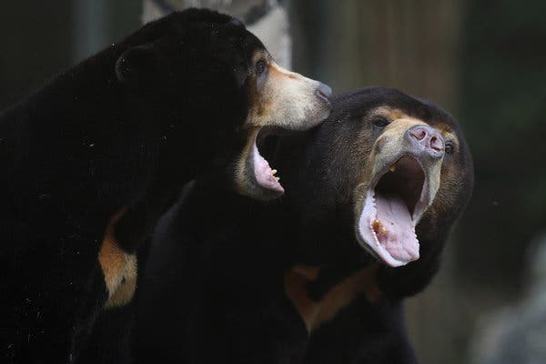

El oso plantador del bosque tropical
A pesar de ser una especie en estado de conservación vulnerable. El Oso Malayo es considerado un gran plantador de la selva tropical, se estiman al menos 300 especies identificadas en los bosques tropicales del sureste asiático
El Oso más pequeño del mundo
El Oso Malayo pertenece a la familia de los Úrsidos (mamíferos omnívoros) sin embargo no comparte mayor relación con ellos aun así resulta curioso que sea el más pequeño de estos, siendo conocido por ser el oso más pequeño.
Dónde vive el Oso Malayo


La Unión Internacional para la Conservación de la Naturaleza (UICN) ha determinado que su población ha descendido en un 30% en las 3 últimas décadas. Vive en los Bosques tropicales de sureste asiático, donde la temperatura puede ser de 25º a 35º.
Cómo se comunican
Vocalizan utilizando variados sonidos. Cuando gruñen: su sonido de grito puede sonar como el ladrido de un perro. Llamada de contacto: Los adultos usan un chasquido, parecido al sonido de una gallina, que indica una intención amistosa.
Lengua
El Oso Malayo pertenece a la familia de los Úrsidos (mamíferos omnívoros) sin embargo no comparte mayor relación con ellos aun así resulta curioso que sea el más pequeño de estos, siendo conocido por ser el oso más pequeño.